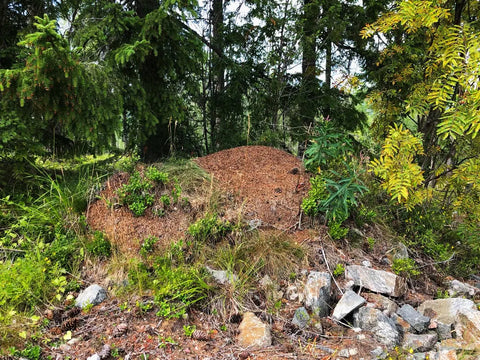

Cuando pensamos en un hormiguero, probablemente muchos nos vengan a la mente los clásicos hormigueros de madera (familia Formica). Existen en muchas formas y variaciones y cada hormiguero es único. Uno de los hormigueros más comunes es el que está hecho de agujas de pino y otros materiales de los bosques.
¿Cómo es un hormiguero?
La estructura varía según la especie y la zona. El hormiguero es una solución inteligente que permite a las hormigas controlar la temperatura y el clima del hormiguero. Trasladan a las crías a la parte del hormiguero que les conviene más en un momento dado.
El hormiguero no es simplemente una estructura aleatoria hecha de tierra y agujas. Esta sólida construcción es muy sofisticada y es lo que hace posible el control del clima de la colonia. Con la ayuda de ramitas, agujas de pino, guijarros, arena, tierra, hojas y otros materiales del entorno, el hormiguero puede ser una verdadera obra maestra de la construcción casera. La superficie suele ser una costra sólida que hace que el nido sea impermeable y al mismo tiempo genere calor. Algunas especies construyen sus hormigueros con guijarros y minerales, mientras que otras utilizan vegetación. En la mayoría de las especies de hormigas se pueden encontrar pequeñas piedras o guijarros en la estructura y la superficie del hormiguero. La razón detrás de esto es probablemente que las piedras generan calor y, por lo tanto, hacen que las cámaras de la colonia sean más cálidas. También se encuentra resina de árboles y plantas en los hormigueros. No sabemos exactamente por qué, pero una buena suposición es que la resina es antibacteriana y mata los hongos.

El interior de un hormiguero
El hormiguero consta de dos partes: la que está sobre el suelo y la que está debajo de él. Ambas partes tienen una gran red de túneles que conectan muchas cámaras de tamaño variable. Es muy común que las hormigas coloquen las pupas en la parte superior del hormiguero, aprovechando la luz del sol. El hormiguero está construido para ser lo más eficaz posible, cubriendo el máximo de necesidades. Cuando el invierno nórdico está casi terminado, las reinas de las hormigas Formica comienzan a poner huevos nuevamente. La temperatura en el interior todavía puede rondar los 26-28 °C (78-82 °F) aunque el hormiguero esté cubierto de nieve.
A medida que cambian las estaciones, se utilizan las distintas áreas de los hormigueros para crear el clima óptimo para las crías y las reinas. Cuando hace calor, se las lleva a la parte superior del hormiguero. Cuando hay sequía o simplemente hace demasiado frío en el exterior, se las lleva a las cámaras inferiores, cálidas y húmedas.
La superficie del hormiguero puede parecer una aburrida corteza de agujas de pino, pero en realidad está llena de pequeñas entradas por todas partes. Las hormigas las abren y cierran como nosotros usamos puertas. Pero en lugar de puertas con bisagras, usan piedras y otros materiales del bosque para aislarse del clima y los enemigos.
¿Qué especies de hormigas construyen hormigueros?
Las hormigas constructoras de hormigueros más habituales son las de la familia nórdica de las Formica. Al menos si hablamos del clásico hormiguero de agujas de pino. Muchas otras hormigas tienen técnicas similares pero no construyen un hormiguero tan clásico como las Formica.
¿Qué tan grandes pueden llegar a ser los hormigueros?
Por supuesto, hay hormigueros pequeños y enormes, y todo lo que se encuentra entre estos dos extremos. Los hormigueros más grandes son los de Formica aquilonia, cuyos hormigueros pueden alcanzar hasta 2,5 metros de diámetro. Y un hormiguero de madera (Formica polyctena) puede alcanzar una impresionante circunferencia de 20 metros. ¡Eso es enorme!
¿Qué edad puede alcanzar un hormiguero?
Se cree que muchos hormigueros tienen varios cientos de años de antigüedad, pero, por supuesto, depende de la especie y del tipo de entorno en el que se encuentren. La hormiga común de los bosques (Formica) tiene un sistema inteligente de múltiples reinas (poligíneas), lo que facilita que sus colonias sobrevivan más tiempo. Cuando una reina muere, otra puede ocupar su lugar. Las colonias monogínicas ( Lasius niger , por ejemplo) no sobreviven a su reina. Aunque esta puede llegar a vivir hasta los 30 años, la colonia muere con ella.
¿Dónde construyen las hormigas sus hormigueros?
A las hormigas les gusta aprovechar el entorno en su beneficio. Por eso, muchos hormigueros se construyen estratégicamente junto a árboles o encima (o debajo) de piedras, troncos o tocones. Esta estructura sólida ayuda a proteger a las hormigas de los enemigos y las fuerzas de la naturaleza. A su vez, esto hace que la colonia de hormigas tenga más éxito que sus vecinas. Los hormigueros que sobreviven durante más tiempo son probablemente los que combinan un buen lugar para el nido y un buen entorno (rico en material y alimentos). Es muy común que los hormigueros (en el hemisferio norte) se construyan orientados al sur, ya que es donde brilla más el sol.
Red de hormigueros
Muchas especies de hormigas construyen más de un nido. Los nidos adicionales se denominan nidos satélite y pueden albergar reinas o solo crías y obreras. Los nidos satélite proporcionan a las hormigas una forma de expandir su territorio. Ninguna otra hormiga (o insecto) podrá establecerse en el área controlada por la colonia madre. Las obreras de las colonias se reúnen en el suelo cuando buscan alimento, pero no se dañan entre sí. Pertenecen a la misma colonia aunque sus nidos puedan estar muy alejados entre sí.
Otros tipos de hormigueros
Muchas hormigas construyen nidos en forma de montículo, pero la mayoría de ellas no utilizan la misma técnica y los mismos materiales que las hormigas fórmicas. Especies como Lasius o Myrmica dejan que la tierra excavada del nido forme el montículo en la parte superior. También les gusta instalarse en matas de hierba, ya que les proporciona gran parte de la protección y las mismas funciones que el hormiguero de madera. El clima se puede controlar en cierta medida mientras se genera calor en la parte superior.